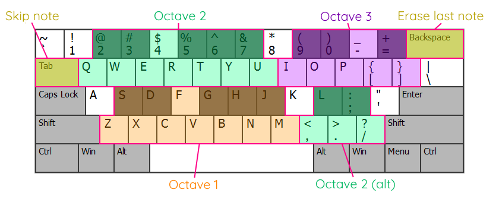

从零做出第一首NES 8-bit曲子：FamiStudio实操入门
带你装好 FamiStudio、认遍主窗口四大区域、弹出第一段可听的 8-bit 旋律，顺带解决新手最容易卡壳的五个问题。
读完这篇，你就能在 FamiStudio 里从空白工程弹出一段像样的 NES 风格 8-bit 旋律，知道导出和进阶扩展从哪切入。
准备：版本、平台与前置条件
FamiStudio官网介绍说它是一款专门写 NES / Famicom 风格 8-bit 音乐的创作工具——从最早那批 FC 游戏的 BGM 到近年独立游戏的怀旧配乐，都能用它从零搭起来。支持 Windows（安装版或便携绿色包，二选一）和 macOS（App 包），还有 iOS / Android 的触屏版。
- Windows 用户推荐装安装版，会自动补齐运行库依赖；喜欢绿色的选便携版 EXE 包，解压即用，不写注册表；
- macOS 用户注意：未签名，首次打开会被系统拦截，到系统设置里放行即可；
- 硬件没什么门槛，十年前的笔记本都能跑——只有导出视频或渲染大工程时才会吃点性能。
装好之后第一次启动，别被 SmartScreen 或 Gatekeeper 的警告吓住，那是未签名软件的常规拦截，放行继续就行。
第一步：装完程序，搞定首次启动的小麻烦
Windows：处理 SmartScreen 警告
从官方下载拿到安装包，解压后双击 Setup.exe，如果 Windows 弹「已保护你的电脑」：
- 在蓝色警告框上点击「更多信息」；
- 出现「仍要运行」按钮后点一下；
- 安装程序会自动装好 VS2015 运行库（x86）这个依赖，完成后开始菜单里能找到快捷方式，Demo 曲也一并装好。
喜欢绿色的就用便携版 EXE，解压到一个纯英文路径（含中文或特殊字符可能闪退），双击直接进程序，配置文件会写在程序目录里。
启动后先看一眼主窗口

主窗口从结构上分成四块，从上到下、从右到左分别是：
- 工具栏（顶部）：文件操作、撤销重做、时间码、播放控制都在这一条；
- 工程浏览器（右侧）：管理歌曲、乐器、DPCM 采样和琶音，加粗显示的那一项就是当前选中；
- 音序器（工具栏下方）：一行一个声道，横向是时间轴，Pattern（乐段）像积木一样排列在这里；
- 钢琴卷帘（下方主体）：写音符、画包络、调效果的主战场。
这里有个关键认知：加粗的选中态决定了你在编辑什么。当前歌曲、当前乐器、当前通道这三样都加粗显示，你在卷帘里弹下的每一个音，都会用当前乐器写在当前歌曲的当前通道上。新手写的音没声音、音色不对，八成是这三样里有一个没选对。
第二步：弹出第一段旋律
新建工程与歌曲
工具栏点「新建工程」，弹出保存对话框随便选个位置。然后在工程浏览器里的「歌曲」分类上右键 → 新建歌曲，给它起个名字——第一首就叫 mysong 吧。
准备乐器
工程浏览器里的「乐器」分类下默认有一套基础方波 / 三角波 / 噪音 / DPCM 乐器，直接用就行，或者右键 → 新建乐器从头调。NES 原生只有五条声道：两条方波、一条三角波、一条噪音、一条 DPCM 采样。每条通道同一时刻只能用一个乐器。

进入卷帘写音符
工程浏览器里双击你刚建的歌曲，音序器和钢琴卷帘会自动切换到这首曲目的视角。卷帘是一个网格：
- 竖向是音高（A0 到 C8），横向是时间；
- 卷帘底部有一排键盘显示的琴键，鼠标点任何一个就能用当前乐器在当前通道试听；
- 按住琴键拖动是滑音，中键拖动能平移视图（无中键鼠标可以在设置里开 Alt+左键模拟中键）。
用电脑键盘也能弹——QWERTY 对应琴键的中间那八度，Z-X-C-V-B-N-M 是一个八度往下，S-D-G-H-J-K-L 是往上一个八度，就像真钢琴的黑白键布局。

现在试试：工程浏览器里确保歌曲、乐器、通道都加粗选中了，按一下 Q——应该能听到一个方波 C 音。能出声说明环境就位了，接下来就是把一段旋律写进卷帘。
写进乐段（Pattern）
音序器第一行默认是 Pattern 0，双击它进入卷帘。在卷帘网格上点击就能放下一个音，拖动能拉长或缩短时值。每一行就是一个 Pattern，你把多个 Pattern 在音序器里横向排列，就组成了完整曲目。
一个好用的操作：点住卷帘里的音，按 F 键自动填充到下一个音的起始位置——这样能快速打出均匀的节奏，不用一格一格地数。

第三步：让它像首曲子，而不是几个孤立的音
分层写入声道
NES 的五条声道各有分工：
- 方波 1 / 方波 2：主旋律和副旋律，音色明亮；
- 三角波：低音线，厚重沉稳，适合铺底；
- 噪音：军鼓、铙钹等打击乐；
- DPCM：8-bit 采样回放，比如人声或贝斯线。
实际写的时候可以先在方波通道里把主旋律弹出来，三角波走低音根音，再用噪音补一点鼓点——这样三层搭完，整首曲子就有了雏形。
调一调乐器包络
每个乐器都有 ADSR 包络（Attack 起音 / Decay 衰减 / Sustain 持续 / Release 释放）。双击工程浏览器里的乐器图标，展开左侧箭头能看到全套参数：
- 方波乐器的 Duty Cycle（占空比）能改变音色：25% 最尖、50% 最圆润、75% 最闷；
- 三角波包络的 Release 拉短一点，低音就不拖沓；
- 想让音符有颤音，给乐器加 Vibrato 效果。
写完主旋律之后花五分钟调一调乐器，音色变化会让整首曲子的质感提升一大截——这是新手最容易跳过、但收益极高的步骤。每个参数的具体取值和对应效果可以翻 FamiStudio文档 对照。
常见卡点：五个新手最容易翻车的地方
卡点一：音点下去没声音
按顺序检查三样加粗选中态：当前乐器、当前歌曲、当前通道。这三样里只要有一个不对，你的音就会用错误的音色写到错误的位置，或者根本没通道可写。确认完还没声的话，进设置把音频缓冲调大试试，慢 CPU 机器默认缓冲区太小会断断续续。
卡点二：方波有爆音
打开设置面板，找到「抑制方波爆音」（Blaarg 平滑颤音技术）开关——这个专门解决方波换音时的瞬态爆音。或者给音符加一点点无起音（Delay），效果也不错。
卡点三：双击工程浏览器没反应
如果你用的是便携版、或程序路径含中文 / 空格，偶尔会出现双击失效的情况。把程序挪到一个干净路径（比如 D:\FamiStudio\）再试。安装版一般不会有这问题。
卡点四：录完的音停不下来
设置里找到「乐器自动停止」的秒数，调小就行。FamiStudio 默认每个音符持续到下一个音到来，但如果你的工程里某个通道长时间空着，乐器就会一直响。
卡点五：导出视频按钮灰掉
那是没配置 FFmpeg。进设置面板找到 FFmpeg 路径，指向你本机的 ffmpeg.exe 就亮了。NSF 导出和 WAV 导出不需要额外依赖，但 NSF 有 28KB 的硬上限——工程过大时会自动丢弃一些特性，打开错误日志逐条看就行。
进阶：还能玩什么
搞定基础创作之后，扩展芯片是 FamiStudio 最精彩的部分——VRC6、VRC7、N163、FDS、MMC5 这些扩展音频芯片能让 NES 跳出原生五声道的限制，VRC7 甚至内置雅马哈 YM2413 FM 合成，电钢、铜管、拨弦贝斯都能出。每个扩展芯片的参数和音色机制不一样，从 VRC7 开始玩最有意思，因为它自带 15 个预置音色，直接改参数就能出效果。
另外，FamiStudio 能直接导出 NSF（NES Sound Format）和 ROM——写好的曲子不仅能当音频文件用，打包成 ROM 就能在模拟器里直接播放甚至烧卡。做独立游戏 BGM 的朋友，这条路值得走到底。源码和素材镜像分布在 GitHub、Gitee 和 GitCode 三个仓库，国内网络环境下 Gitee 和 GitCode 访问更稳定。